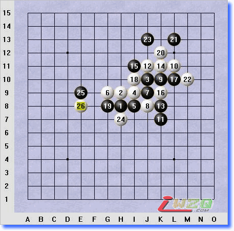

27你会如何下？
#1 27你会如何下？ 作者：深蓝妖瞳 发表时间：2007-10-17 6:34:33
复杂的局面，复杂的思路，呵呵
#2 Re:27你会如何下？ 作者：行云流水 发表时间：2007-10-17 9:41:52
27可以选择的地方不少，关键看实战棋手要防还是要攻。如果要攻。则主要考虑在右边落子，如果是要防，则主要在左上方防御。#3 Re:27你会如何下？ 作者：勾陈 发表时间：2007-11-5 11:19:22
我选择和棋 看的头都大了
#4 Re:27你会如何下？ 作者：小丸.net 发表时间：2007-11-5 15:44:44
楼上的没有战斗欲望.
#5 Re:27你会如何下？ 作者：深蓝妖瞳 发表时间：2007-11-20 4:55:51
请问顾先生，如果你遇到这个局面27会如何落？或者前面黑根本就不按这种下法下？#6 Re:27你会如何下？ 作者：行云流水 发表时间：2007-11-21 9:41:50
I5、L7都是可以考虑的地方。#7 Re:27你会如何下？ 作者：星尘 发表时间：2007-11-21 14:45:04
H12也可以考虑#8 Re:27你会如何下？ 作者：深蓝妖瞳 发表时间：2007-11-23 7:12:37
看来顾先生是进攻型的啊.呵呵.#9 Re:27你会如何下？ 作者：行云流水 发表时间：2007-11-23 9:15:28
因为从H12今后的发展趋向看，并不能给黑棋带来更大的有利性。#10 Re:27你会如何下？ 作者：深蓝妖瞳 发表时间：2007-11-24 4:33:41
所言不错，看来利用右边的进攻使左边的黑棋变厚才是正道。我认为后面局面应该是白优，不过黑下的稳的话和棋可能性很大.
#11 Re:27你会如何下？ 作者：深蓝妖瞳 发表时间：2007-11-24 4:40:57
补一句，白棋有2个点对黑棋是制命的（G10,F7)，黑棋如何处理不好后面的下法白将会变为近胜的局面.